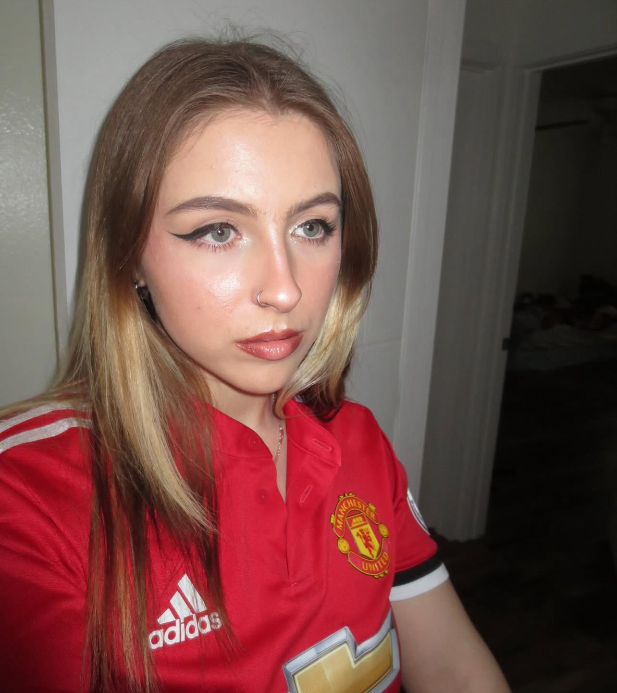

About Me
Hello! My name is Matea Mihaljević and I am an artist based in Salt Lake City, Utah. I graduated from the University of Utah with a bachelor's in painting and drawing. My journey as an artist has been deeply influenced by my cultural heritage and the stories that shaped my family's history.

Artist Statement
As an artist, I am in limbo between my culture and generational pain. The culture of Bosnia and Herzegovina, where my parents were born, and the pain they were forced to endure as teenagers. My work depicts a connection I seek with my culture and an exploration that gets tangled with my parents' narrative. I have this deep desire to learn about the culture and war that took place, but my parents want to move forward from those times. I strive to create beautiful moments in my artwork while never forgetting the past. Everything done in my work is a deliberate act to solidify the intangible emotions for my visual narrative.
My process begins with moments captured through my photography; this is the start of my artistic expression. The photo becomes my first composition that evolves throughout the process of painting. I use thin layers of acrylic paint, and each layer of brushstrokes becomes a deliberate act of building the composition. These brushstrokes and layers are the language that becomes apparent in my body of work. From this foundation I add objects, such as artifacts from the war, that echo the themes of my cultural exploration. The amalgamation of these objects adds a layer of complexity and depth to my work that you don’t get from just the photograph, things that you notice the more you look at the artwork.
Finally, my art demonstrates an ongoing connection between my personal and generational exploration. It is a visual testament to the beauty and hope that can come from catastrophes like war. I am stopping in time to realize that we all still harmonize together, even through our traumatic pasts. Throughout my creative process, I seek to show off the essence of my culture and the trauma from a war that still lingers in my family. I make all of my connections through history and my own lived experiences.